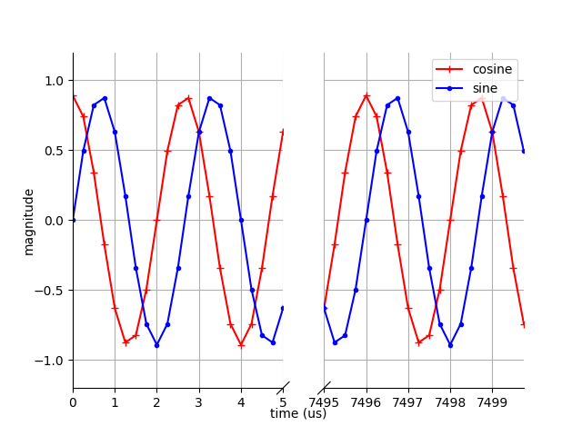
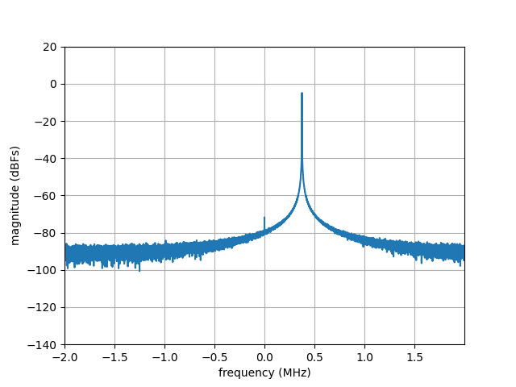
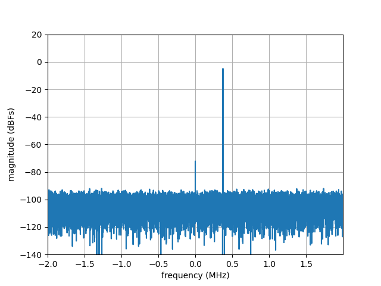
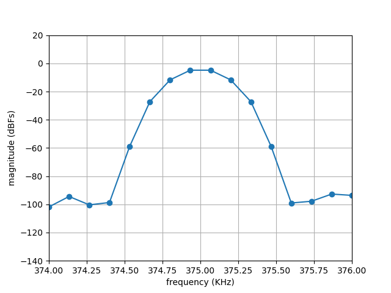
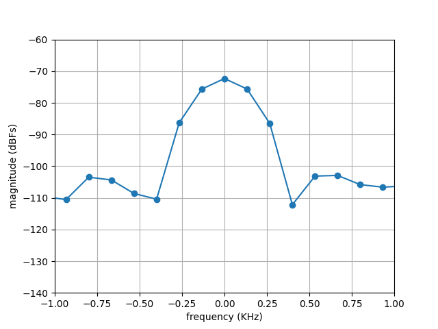
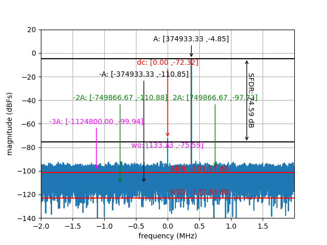

Windowing and Single Side Bins
In this tutorial, we study a common scenario that arises when spectral analysis is compromised due to leakage. We will then look at two ways to address this problem: applying a non-rectangular window function before computing the FFT and appropriately configuring the number of single side bins within Genalyzer. The waveform we analyze will be a 375 KHz complex sinusoidal tone sampled at 4 MSPS. The only impairment in this waveform will be quantization noise. At the end of this tutorial, the reader will have gained an understanding on how to select the number of single side bins for the signal component in a test, in order to compute performance metrics such as SFDR, FSNR, SNR, NSD etc. This tutorial follows the discussion on spectral analysis. So, please read that page first to become familiar with the workflow of Genalyzer.
To recap, we follow a three-stage workflow in Genalyzer as shown below.
graph LR;
A[Generate/Import Waveform] --> B[Compute FFT];
B -->C1[Configure Spectral Analysis];
subgraph SA[Spectral Analysis]
C1[Configure] -->C2[Run];
end
style SA fill:#ffffff
We will first generate the waveform to be analyzed, compute its FFT, and calculate various performance metrics by running spectral analysis. Please refer to the leakage and spectral-analysis example Python script to follow the discussion on this page.
Leakage
graph LR;
A[Generate/Import Waveform] --> B[Compute FFT];
B -->C1[Configure Spectral Analysis];
subgraph SA[Spectral Analysis]
C1[Configure] -->C2[Run];
end
style SA fill:#ffffff
style A fill:#9fa4fc
style B fill:#9fa4fc
In the leakage and spectral-analysis example Python script, we generate the complex-sinusoidal waveform as follows:
# signal configuration
npts = 30000 # number of points in the signal
fs = 4e6 # sample-rate of the data
freq = 375000 # tone frequency
phase = 0.0 # tone phase
ampl_dbfs = -1.0 # amplitude of the tone in dBFS
ampl = (fsr / 2) * 10 ** (ampl_dbfs / 20) # amplitude of the tone in linear scale
# generate signal for analysis
wf = gn.cos(npts, fs, ampl, freq, phase)
awfq = gn.sin(npts, fs, ampl, freq, phase)
qwfi = gn.quantize(awfi, fsr, qres, qnoise, code_fmt)
qwfq = gn.quantize(awfq, fsr, qres, qnoise, code_fmt)
A time-domain plot of the complex-sinusoidal tone is shown below for reference.

Time-domain plot of a 375 KHz complex sinusoidal tone sampled at 4 MSPS.
As shown in this plot, the snapshot of the signal is aperiodic and data is sampled over an incomplete period at the end. This discontinuity causes leakage resulting in a smearing effect that spreads the energy of the 375 KHz tone over a wider frequency range, with the appearance of frequency components that are not present in the original signal. This is readily seen in the FFT plot below.

FFT plot of a 375 KHz complex sinusoidal tone sampled at 4 MSPS.
Windowing To Reduce Leakage
Note that in the above plot, the FFT of the time-domain waveform was computed as is with the underlying assumption that the waveform is periodic. In practice, as discussed above, this assumption is generally invalid and the snapshot of a waveform contains incomplete periods rendering the signal aperiodic. To overcome this limitation, a window function is applied to reduce leakage. In the leakage and spectral-analysis example Python script, we used Blackman-Harris window as shown in the snippet below:
# signal configuration
npts = 30000 # number of points in the signal
fs = 4e6 # sample-rate of the data
freq = 375000 # tone frequency
phase = 0.0 # tone phase
ampl_dbfs = -1.0 # amplitude of the tone in dBFS
qnoise_dbfs = -60.0 # quantizer noise in dBFS
fsr = 2.0 # full-scale range of I/Q components of the complex tone
ampl = (fsr / 2) * 10 ** (ampl_dbfs / 20) # amplitude of the tone in linear scale
qnoise = 10 ** (qnoise_dbfs / 20) # quantizer noise in linear scale
qres = 12 # data resolution
code_fmt = gn.CodeFormat.TWOS_COMPLEMENT # integer data format
# FFT configuration
navg = 1 # number of FFT averages
nfft = int(npts/navg) # FFT-order
window = gn.Window.BLACKMAN_HARRIS # window function to apply
axis_type = gn.FreqAxisType.DC_CENTER # axis type
# generate signal for analysis
awfi = gn.cos(npts, fs, ampl, freq, phase)
awfq = gn.sin(npts, fs, ampl, freq, phase)
qwfi = gn.quantize(awfi, fsr, qres, qnoise, code_fmt)
qwfq = gn.quantize(awfq, fsr, qres, qnoise, code_fmt)
# compute FFT
fft_cplx = gn.fft(qwfi, qwfq, qres, navg, nfft, window, code_fmt)
A window function shapes the time-domain waveform such that the first and last samples are exactly zero, and the samples in between are multiplied according to a mathematical function that is symmetric around the center and tapers off away from the center. As a result, an aperiodic waveform is forced to be periodic. The FFT plot of the windowed waveform below shows that leakage has been minimized and a peak where the tone is expected is seen more clearly than with a rectangular window.

FFT plot of a 375 KHz complex sinusoidal tone sampled at 4 MSPS.
Note
When computing the FFT of a waveform to which a window function has been applied, a weighting factor must also be taken into account so that the correct FFT signal amplitude level is recovered after the windowing. Genalyzer takes this effect into account.
Spectral Analysis
Configure Single Side Bins
graph LR;
A[Generate/Import Waveform] --> B[Compute FFT];
B -->C1[Configure Spectral Analysis];
subgraph SA[Spectral Analysis]
C1[Configure] -->C2[Run];
end
style C1 fill:#9fa4fc
style SA fill:#ffffff
Even though leakage has been minimized, the tone is not as sharp as when the snapshot of the waveform were periodic. This can be observed by zooming into the region around the 375 KHz tone. This is shown in the plot below.

Zoomed-in FFT plot of a 375 KHz complex sinusoidal tone sampled at 4 MSPS.
Another key point to note is that there is no bin that corresponds to 375 KHz due to the settings we chose in this working example. To go into more detail, the width of each bin in our working example is fs/npts = 133.33 Hz, which is not an integer divider of 375 KHz. Hence the energy of the tone is spread over 12 neighboring bins, approximately. Users need to configure Genalyzer by providing the number of these bins that need to be taken into account when conducting spectral analysis.
In a similar manner, we can see by zooming around the DC component that its energy is spread over 7 bins, approximately. This can be seen in the figure below.

Consequently, we configure the DC component also to consider more than one bin in calculating the performance metrics.
In leakage and spectral-analysis example Python script, it is done by the following lines of code, where a test if created first followed by associating various components to this test.
# Fourier analysis configuration
test_label = "fa"
gn.fa_create(test_label)
signal_component_label = 'A'
ssb_fund = 6 # number of single-side bins for the signal component
ssb_dc = 3 # number of single-side bins for the DC-component
gn.fa_max_tone(test_label, signal_component_label, gn.FaCompTag.SIGNAL, ssb_fund)
gn.fa_ssb(test_label, gn.FaSsb.DC, ssb_dc)
Note that, we set ssb_fund to 6 and ssb_dc to 3. These choices are based on the plots above where we determined that 12 bins in the neighborhood of the 375 KHz tone contain all the energy of the signal tone and 7 bins around DC contain the energy of the DC-component.
Run
graph LR;
A[Generate/Import Waveform] --> B[Compute FFT];
B -->C1[Configure Spectral Analysis];
subgraph SA[Spectral Analysis]
C1[Configure] -->C2[Run];
end
style C2 fill:#9fa4fc
style SA fill:#ffffff
Next, we run FFT analysis in the leakage and spectral-analysis example Python script as follows:
# Fourier analysis execution
results = gn.fft_analysis(test_label, fft_cplx, nfft, axis_type)
The resulting magnitude spectrum plot for the working example considered so far, with DC, signal, and harmonic components labeled, is shown below.

Magnitude spectrum of the FFT showing signal, harmonic, DC, and WO components.